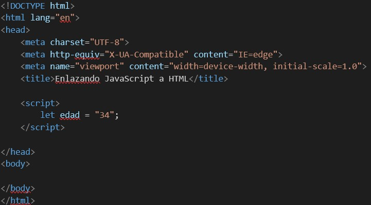
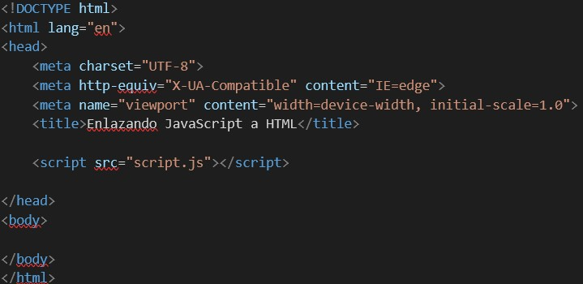
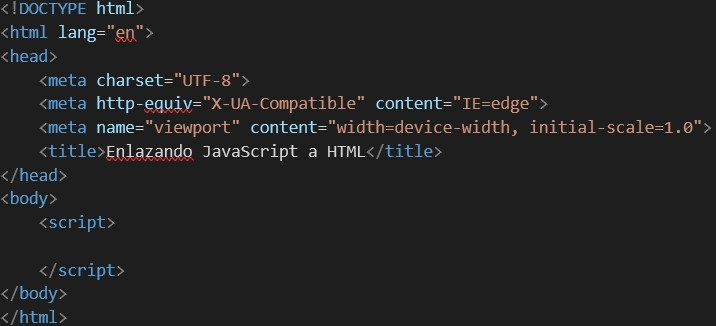
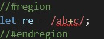
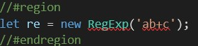

Investigación de JavaScript
¿Qué es JavaScript?
Para comenzar a hablar de JavaScript, tenemos que comenzar con una breve introducción a este. JavaScript es un lenguaje de programación que, mediante diferentes secuencias de comandos, nos posibilita tener una página web con la que los usuarios
puedan interactuar cuando realicen acciones dentro del sitio, como, por ejemplo, al presionar un botón. Ya teniendo sabida esta base, podemos comenzar a hablar de JavaScript más en profundidad.
Versiones de JavaScript
JavaScript
- JavaScript 1.0
- JavaScript 1.1
- JavaScript 1.2
- JavaScript 1.3
- JavaScript 1.4
- JavaScript 1.5
- JavaScript 1.6
- JavaScript 1.7
ECMAScript
- ECMAScript 6 (ES6)
- ECMAScript 7 (ES7)
- ECMAScript 8 (ES8)
- ECMAScript 9 (ES9)
- ECMAScript 10 (ES10)
- ECMAScript 11 (ES11)
- ECMAScript 12 (ES12)
- ECMAScript 13 (ES13)
Maneras de integrar JS a HTML
Tenemos 3 formas de integrar JavaScript a HTML para que los códigos trabajen juntos y todo usando la misma etiqueta, pero en diferentes lugares. La etiqueta "script" nos ayuda a vincular el archivo JavaScript con el documento HTML y, dependiendo
del lugar en donde se coloque y se vaya a trabajar, va a depender como nos vamos a organizar para programar.
Script en head

En esta forma, solamente basta con colocar la etiqueta script en el head y comenzar a programar en ella nuestro código JS para implementarlo en el HTML.
Script y scr en head

Otra manera alternativa y más recomendada, si no queremos agregar el código JS en el documento HTML, es crear un archivo aparte con el nombre “script.js” y luego enlanzarlo dentro de la etiqueta head mediante la etiqueta script, agregando
el atributo “src”, donde, entre comillas, ponemos el nombre del archivo.
Script en body

Con la etiqueta script en body, la función es la misma que si la pusiéramos en head, ya que estaríamos programando el código JS dentro de la etiqueta en el body.
Manejo de variables, tipos de datos y expresiones regulares en JS
Hay tres formas distintas de declarar variables en JS.
Tenemos var, que nos ayuda a darle nombre a un valor y así después usarlo para distintos fines, como la reutilización de código, registrar los valores o hasta actualizarlo luego cuando queramos, que es una de las características que diferencian
a var de const.
Con const lo que hacemos es asignarle un nombre a un valor constante, lo que quiere decir que el valor de la variable no puede actualizarse y es muy importante que sea inicializada para poder utilizarse correctamente sin que nos aparezca un
error.
Cuando usamos let para definir nuestras variables no estamos haciendo muy diferente que con var, solo que let es una versión más actualizada que var en JS.
Tipo de variables en JS
- Undefined: el tipo de dato undefined nos indica que a la variable no se asignó un valor.
- Number: uno de los dos tipos numéricos de los que vamos a estar hablando junto BigInt. Number es un valor numérico que viene en un formato binario de 64 bits.
- Symbol: cuando nos referimos a symbol, estamos hablando de un valor tanto único como inmutable.
- Boolean: un tipo de dato boolean significa una entidad lógica, la cual consta de dos valores opuestos = “true” y “false”.
- String: string nos indica que el de dato va a ser textual.
- BigInt: como ya mencionado antes, bigint es un tipo de dato numérico que nos posibilita mostrar números enteros y con el cual podemos tanto operar como almacenar con confianza en números enteros que hasta sobrepasen el límite seguro de
números enteros para number.
- Null: con null solo tenemos un valor, el cual, justamente, es null, que quiere decir nulo o vacío.
Expresiones Regulares en JS
En JavaScript tenemos las llamadas expresiones regulares, las cuales son una especie de patron que se usa para poder hacer que distintas combinaciones de caracteres en cadenas puedan coincidir y también pueden ser consideradas objetos.
Para crear una expresión regular en JS tenemos dos formar de llevarlo a cabo, ya sea mediante una expresión regular literal o a través de la función constructora del objeto “RedExp”.
Expresión literal:

RegExp

Declarar funciones en JS
Una función en JavaScript es considerada un conjunto de sentencias o un procedimiento cuyo fin es llevar a cabo una tarea. Para declarar una función contamos con distintas maneras, de las cuales hoy vamos a ver 6 mostrando ejemplos visuales
a la vez.
- Function declaration: podría ser considerada la forma de declaración más fácil de usar, ya que se crea utilizando la palabra “function”, luego de el nombre asignado a la función, una lista de parámetros y abrir y cerrar las llaves.
- Function expression: con function expression, la sintaxis a usar es parecida a la que usamos en la forma anterior, con la diferencia de que la función, en este caso, no va a comenzar con “function”, sino que podemos guardar la función
en una variable.
- Arrow function: en arrow function la sintaxis cambia drasticamente, ya que hay ciertas reglas con arrow function que las otras formas no tienen, como el hecho de no crea su contexto propio como function declaration y function expression
y también que son anónimas. Con esta forma lo que hacemos es definir primero los parámetros entre paréntesis, luego colocar el símbolo “=>” y por último abrir y cerrar llaves.
- Function constructor: es considerada una de las formas menos comunes de declarar funciones en JavaScript. Con esta forma es posible crear una variable cuya tarea sea invocar a un objeto function y, cuando sea invocado, poder enviarle todos
los argumentos deseados.
- IIFE: esta forma es comúnmente utilizada cuando, en vez de llamar a una misma función varias veces en un mismo o distinto código, solo queremos llamar a la función una sola vez para poder adquirir un resultado. Así, IIFE es una forma que
no solo se ejecuta de forma inmediata, sino que también no es accesible de manera posterior. El primer paso para crear esta función es en un operador de agrupación y luego colocar paréntesis.
- Shorthand method definition: esta es la forma la cual es posible utilizar como un método al momento de la declaración de un objeto o en las clases de ECMASript6. Para llevarla a cabo, primero hay que darle un nombre de función, después
una lista de parámetros que tienen que ir entre paréntesis y, por supuesto, abrir y cerrar las llaves.
- Generator function: Con generator function poseemos una característica única del mismo, siendo que, a diferencia de todas las otras formas mencionadas anteriormente, ésta nos posibilita detener la función en un punto adentro de todo el
conjunto de instrucciones y después poder volver de forma posterior la ejecución desde el punto en el que nos detuvimos. Para usar esta forma, la sintaxis no cambia mucho de “function declaration” y “function expression”.
Operadores de conversión en JS
- ToString: utilizado, como su nombre lo indica, como una conversión al tipo de dato String cuando se necesite el formato de texto para un valor.
- ToNumber: se usa cuando queremos convertir de forma numérica, suele pasar de manera automática en funciones tanto matemáticas como en expresiones también.
- ToBoolean: suele usarse o suceder en operaciones lógicas, aunque otra forma de hacerlo de la misma manera es explícitamente llamando a función “Boolean(value)”.
Estructuras de control en JS
Objeto Dom en JS
Object Map en JS
Eventos de JS
Formularios en JS